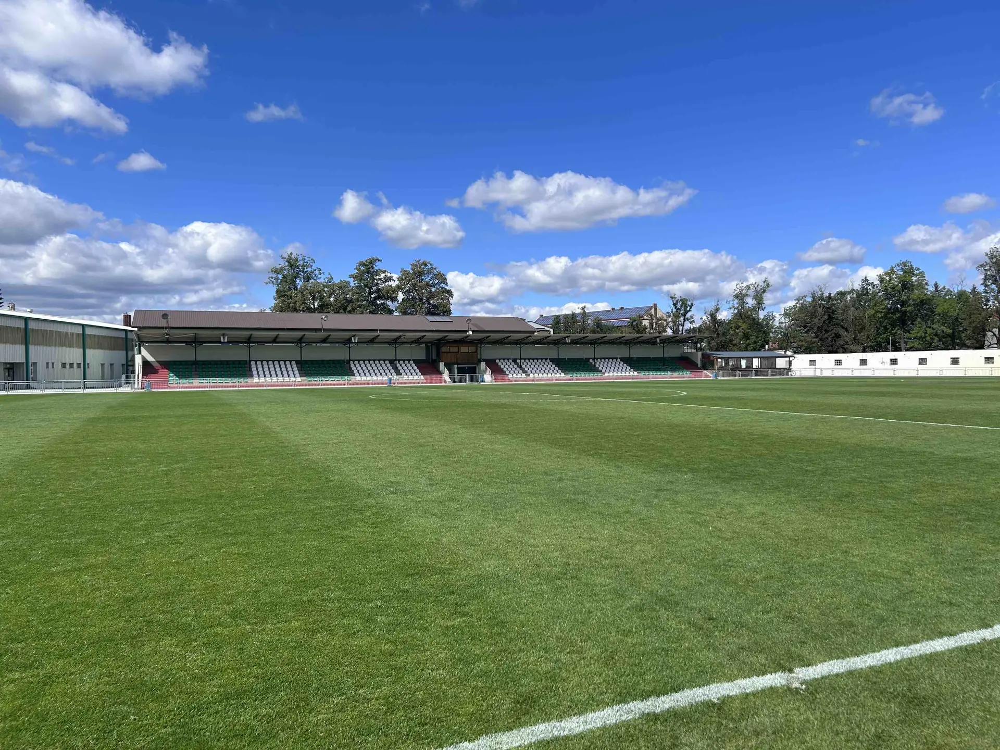

- Úvod
- Zápasy
Rozpis zápasů
Kdy a kde hrajeme. Mistrovská utkání, pohár i přípravné zápasy na jednom místě. Kompletní výsledky a průběžné tabulky vede FAČR na portálu Fotbal.cz.
Kdy hrajeme
Vyberte mužstvo. Nahoře jsou nejbližší zápasy, pod nimi odehrané výsledky od nejnovějšího. Zelený pruh označuje domácí zápas v Olšinkách, zlatý pohár.
Tabulky a výsledky
Průběžné pořadí áčka v divizi, skupině C. Tabulky všech ostatních mužstev, statistiky střelců a kompletní rozlosování vede FAČR na Fotbal.cz.
Poslední výsledky
Tabulka Divize C
Sezóna 2026/2027| Tým | Soutěž | Odkaz |
|---|---|---|
| Muži A | 4. česká fotbalová liga (divize), skupina C | Tabulka |
| Muži B | 8. liga mužů, 1.B třída Pardubického kraje, skupina A | Tabulka |
| Dorost U19 | 4. liga dorostu U19, skupina A | Tabulka |
| Dorost U17 | 4. liga mladšího dorostu U17 | Tabulka |
| Žáci starší | 3. liga starších žáků, skupina A | Tabulka |
| Žáci mladší | 3. liga mladších žáků, skupina A | Tabulka |
Pohár FAČR
V předkole MOL Cupu 2026/2027 prohrálo áčko 1. srpna v Heřmanově Městci 0:3 a letos v poháru končí.
Výsledky MOL CupuPřijďte fandit
Domácí zápasy hrajeme v areálu Olšinky. Vstup na mládežnická utkání je zdarma.
Náš stadionUvidíme se v Olšinkách
Termíny se občas mění podle rozhodnutí řídící komise. Aktuální změny hlásíme na Facebooku a Instagramu klubu.